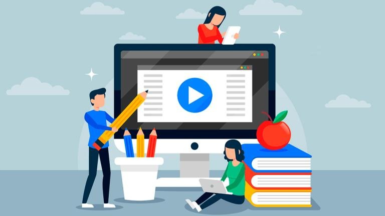

Tiempo de lectura: 15 min.
Materia: Tecnología educativa
Licenciatura en Psicopedagogía - 7° cuatrimestre
UPAV - Universidad Popular Autonoma de Veracruz
Autor: Alejandra de la Vega. Mier. 19 de noviembre 2025
Sean bienvenidos, en este blog podras encontrar información acerca de la tecnología educativa, como comenzo, su importancia dentro de la educación y la necesidad que existe actualmente de su uso.
¿Qué es la tecnología educativa?
La tecnología educativa es el uso innovador de la tecnología para mejorar y transformar el proceso de enseñanza y aprendizaje. En esencia, la tecnología educativa pretende aprovechar los avances tecnológicos para mejorar los resultados educativos, aumentar el compromiso y fomentar experiencias de aprendizaje personalizadas. Va más allá de los métodos tradicionales de enseñanza, integrando la tecnología en los planes de estudio, la evaluación y los sistemas de apoyo a los estudiantes. Estas herramientas permiten a los profesores crear lecciones dinámicas e interactivas, adaptar la enseñanza a las necesidades individuales de los alumnos y realizar un seguimiento más eficaz de sus progresos. Además, la tecnología educativa tiene el potencial de abordar las desigualdades educativas y reducir la brecha digital. Al proporcionar igualdad de acceso a recursos y oportunidades educativas de calidad, puede capacitar a alumnos de todos los orígenes para perseguir sus objetivos educativos y liberar todo su potencial.
La tecnologia educativa ofrece diferentes beneficios, no solo a los maestros, tambien a los alumnos, dando mayor alcance y apoyo a estudiantes que lo requieren. Un ejemplo son los jovenes que no pueden asistir a clases precensiales, ya sea por residir en lugares lejanos de la ciudad o instituto elegido, o por problemas de salud, los cuales impiden su asistencia, dando asi, un apoyo nuevo nunca antes visto.
Origen de la tecnología educativa
El papel ha sido desde su aparición el soporte principal para la transmisión del conocimiento. Su origen está en los papiros datados en el año 2200 a.C. Posteriormente, en el siglo I a. de C. se inventó el papel con las características que han trascendido a lo largo del tiempo.
Una vez conseguido el soporte, llegó el momento de perfeccionar la difusión del contenido. Si bien, durante un largo período de tiempo, la copia manual fue el principal medio de reproducción editorial, la imprenta de Gutenberg cambió las reglas para siempre. Inventada en 1450, su desarrollo supuso un impacto cultural generalizado.
La evolución de la tecnología educativa tras la revolución Industrial
La industrialización marcará la evolución de la tecnología educativa a través de la invención de dos objetos que hoy en día nos resultan de lo más cotidiano. El empleo del grafito para la escritura se materializó en la aparición del lápiz en 1790. Más tarde su producción mecanizada llevó a su uso escolar en todo el mundo.
Cincuenta años después se inventó la pizarra como medio para compartir el conocimiento con todo el alumnado al mismo tiempo. Aunque su uso ha evolucionado a través de los distintos materiales empleados, su aparición fue determinante en la evolución de las tecnologías para la educación, ya que cambió para siempre la organización del aula.
Evolución de las tecnologías educativas en la era digital
El uso de las Tecnologías de la Información y la Comunicación (TIC) en el aula comenzó su desarrollo en el siglo XX. Mediante el empleo de los medios de comunicación en el aula se favorece el interés del alumnado por los contenidos educativos y se crean nuevos espacios de interacción para el aprendizaje.
Posteriormente, el entorno web ha abierto nuevos caminos para la evolución de las tecnologías educativas. Las herramientas digitales favorecen el aprendizaje colaborativo, basado en la interacción entre el alumnado y los profesionales de la educación.
El uso de pizarras digitales, ordenadores y dispositivos móviles es ya una realidad en el entorno educativo. Conocer las características de la tecnología educativa y aplicarlas en los procesos de aprendizaje supone una competencia imprescindible en el aula.
Pero, ¿Cuáles son las tecnologías utilizadas para este tipo de apoyo a estudiantes? Aquí te muestro algunos ejemplos
1. Herramientas de evaluación online:
La tecnología de evaluación incluye cuestionarios, pruebas y evaluaciones online que pueden administrarse y calificarse digitalmente. Estas herramientas proporcionan información inmediata a los alumnos y permiten a los educadores realizar un seguimiento de los progresos, identificar las lagunas de aprendizaje y tomar decisiones pedagógicas basadas en datos.
2. Sistemas de gestión del aprendizaje (LMS):
Los sistemas de gestión del aprendizaje son plataformas digitales que permiten a los educadores crear, impartir y gestionar contenidos y actividades educativas. Las plataformas LMS suelen incluir funciones como la gestión de cursos, el intercambio de contenidos, herramientas de evaluación y canales de comunicación para facilitar el aprendizaje y la colaboración en línea.
3. Herramientas multimedia e interactivas:
Estas herramientas aprovechan elementos multimedia como vídeos, imágenes y simulaciones interactivas para hacer el aprendizaje más atractivo e interactivo. Pueden incluir vídeos educativos, presentaciones interactivas, realidad virtual (RV), realidad aumentada (RA) y plataformas de aprendizaje gamificadas que incorporan elementos de juego para motivar a los alumnos y sumergirlos en el contenido educativo.
4. Aplicaciones educativas y aprendizaje móvil:
Las aplicaciones móviles diseñadas con fines educativos ofrecen a los alumnos la flexibilidad de acceder a recursos educativos, actividades prácticas y contenidos interactivos en sus teléfonos inteligentes y tabletas. Estas aplicaciones abarcan una amplia gama de temas y ofrecen cuestionarios interactivos, fichas, herramientas de aprendizaje de idiomas, etc.
5. Software de aprendizaje adaptativo:
El software de aprendizaje adaptativo utiliza algoritmos e inteligencia artificial para personalizar la experiencia de aprendizaje en función de las necesidades y el rendimiento de cada alumno. Analiza los datos sobre el progreso del alumno y proporciona contenidos, recursos y comentarios personalizados para abordar las lagunas de aprendizaje específicas y optimizar los resultados del aprendizaje.
6. Trivias y quizzes online:
Las trivias online y los quizzes son herramientas idóneas de tecnología educativa para promover la diversión y la gamificación de forma práctica. Por ejemplo, con un creador de trivias online puedes crear un cuestionario de preguntas fácilmente, ya sea de preguntas relacionadas con un tema de clase o bien, con una temática de conocimientos generales o datos divertidos que incrementen el interés de los participantes.
7. Análisis de datos y análisis del aprendizaje:
Las herramientas de análisis de datos recopilan, analizan e interpretan datos sobre el rendimiento, el compromiso y el comportamiento de los alumnos para proporcionar información y apoyar la toma de decisiones. El análisis del aprendizaje permite a los educadores identificar áreas de mejora, realizar un seguimiento del progreso de los alumnos y adaptar la enseñanza a las necesidades individuales.
8. Cursos en línea y aulas virtuales:
Los cursos en línea y las aulas virtuales aprovechan las plataformas basadas en la web para ofrecer contenidos educativos y facilitar las interacciones en directo o asíncronas entre educadores y alumnos. Estas plataformas suelen incluir funciones como videoconferencias, chats, intercambio de contenidos, foros de discusión y herramientas de colaboración para simular la experiencia del aula tradicional en un entorno virtual.
9. Plataformas de colaboración y comunicación:
La tecnología educativa facilita la colaboración y la comunicación entre educadores, alumnos y otras partes interesadas. Plataformas de comunidades virtuales como los foros de debate, las herramientas de edición colaborativa de documentos y el software de videoconferencia permiten la comunicación en tiempo real, el trabajo en equipo y el intercambio de conocimientos.
10. Tecnologías aumentativas y asistenciales:
Estas tecnologías están diseñadas para ayudar a los alumnos con discapacidades o necesidades especiales. Algunos ejemplos son los lectores de pantalla, el software de conversión de voz a texto, los dispositivos de entrada alternativos y las herramientas de comunicación asistida, que mejoran la accesibilidad y permiten entornos de aprendizaje inclusivos.

Estas tecnologías no solo ayudan a la evolucion e la educación, ademas sirven como agentes de cambio para estudiar y aprender de manera lúdica y didáctica, nuevas formas de llevar a cabo diversas actividades, así como incursionar en nuevas carreras. Del mismo modo, se utiliza en carreras ya existentes, como lo es la medicina, la cual crece a pasos agigantados, convirtiendo ahora las cirugías, en algo posible a distancia, con el manejo de un robot, sin duda, ira evolucionando conforme pasen los años, y entre antes se empleé en todas las instituciones, mejor sera la educación proporcionada, y más actualizado sera el aprendizaje.